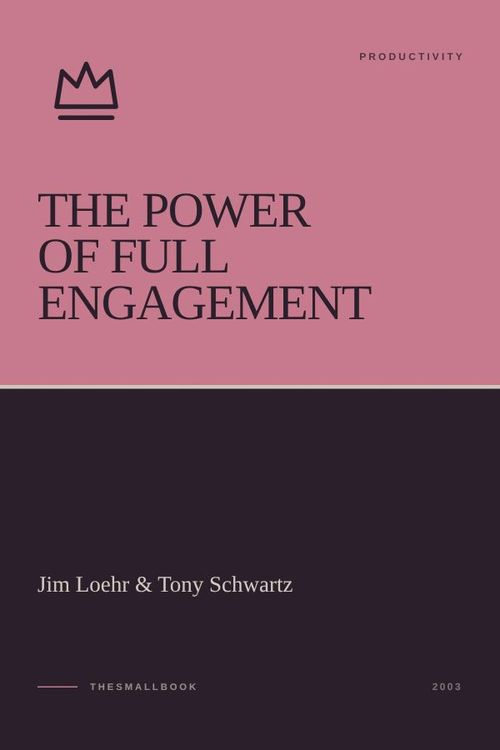

Library › Authors › Jim Loehr & Tony Schwartz
Books by Jim Loehr & Tony Schwartz
Jim Loehr & Tony Schwartz has one book in the library. Every book here is read down to the big idea, the lessons, the lines worth keeping and the actions worth taking. Start with the summary, then buy the full book if it earns a place on your shelf.

The Power of Full Engagement
2003 · 8 min · 6 lessons
Time is fixed, energy is not. Manage your energy like an athlete - full engagement, full recovery - and performance follows.
Jim Loehr and Tony Schwartz spent decades training world-class athletes - then realized the same principles apply to executives, parents and anyone who performs. Their thesis: the real currency of high performance is ENERGY, not time. The best performers work in sprints - full engagement followed by full recovery - because energy is renewed by oscillation, not by linear grinding. Their system: four dimensions of energy (physical, emotional, mental, spiritual), a training regimen that treats energy like a muscle,...
Lessons in the summary
- Energy, Not Time, Is the Currency
- Oscillate: Sprints Beat Marathons
- The Four Energies: Physical, Emotional, Mental, Spiritual
- Rituals Beat Willpower
- Purpose Is the Ultimate Fuel
- Energy, Not Time, Is the Fundamental Currency
Lines worth keeping
- Energy, not time, is the fundamental currency of high performance.
- The key to full engagement is the ritualized management of energy.
- We live in a digital time, but we have analogue bodies.
Questions Jim Loehr & Tony Schwartz helps answer
Read nearby authors next
- Robin Sharma 5 books
- Cal Newport 4 books
- Daniel H. Pink 3 books
- Nir Eyal 3 books
- Atul Gawande 2 books
- Brian Tracy 2 books
- Johann Hari 2 books
- Josh Kaufman 2 books
Questions Jim Loehr & Tony Schwartz helps answer
Where should I start with Jim Loehr & Tony Schwartz? Start with The Power of Full Engagement: Time is fixed, energy is not. Manage your energy like an athlete - full engagement, full recovery - and performance follows.